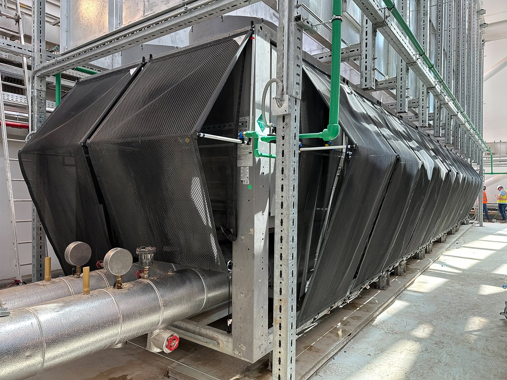
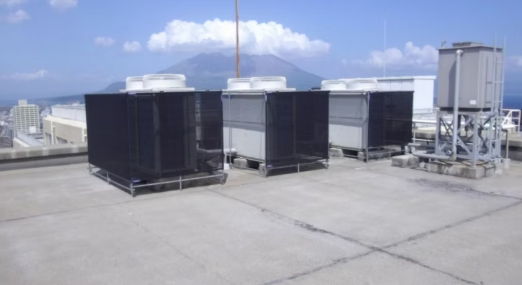

Linkberry ESCO with EcoMesh & SaveNet
A focused ESCO concept to propose to Project Catalyst: reduce cooling energy in factories by combining physical shading (EcoMesh) with simple monitoring and control (SaveNet), and later connect savings records to Cardano.
🇰🇷 목적: 별도 초기 투자 없이 공장 냉방 에너지 비용을 낮추고, 절감된 에너지 비용을 ESCO와 공장이 나누는 공유 절감(Shared-savings) 모델을 설계한 뒤, 장기적으로는 절감 데이터와 정산 구조를 Cardano 블록체인으로 확장하는 것.
What this page is for
- Summarize the ESCO concept for Catalyst reviewers and partners.
- Describe a clear, simple shared-savings model around cooling energy.
- Show how EcoMesh + SaveNet form a practical first-step implementation.
Business Model – Shared-Savings ESCO Structure
Cooling energy focused · Factory use caseThe Linkberry ESCO model targets factories and large buildings that use chillers and cooling towers. Many sites run with high condenser temperatures, poor shading and little monitoring. By installing EcoMesh and SaveNet, we lower the cooling load and verify the savings with data.
1. Target customers & scope
- Factories with 100–800 RT class chillers and cooling towers.
- Sites suffering from high summer power bills and condenser temperatures.
- Focus on outdoor shading, condenser/cooling tower inlet air, and basic control.
2. Contract structure
- No large upfront CAPEX from the factory whenever possible.
- Linkberry ESCO invests in EcoMesh + SaveNet (materials, installation, tuning).
- Contract period typically 3–5 years, with an agreed sharing ratio of savings.
- Minimum guaranteed saving threshold (e.g. 5%) can be negotiated.
3. Baseline & measurement
- Establish baseline: chiller kW, chilled-water temperature, outdoor temperature, cooling tower fan/pump power over a reference period.
- After installation, monitor the same points with SaveNet.
- Normalize data for production level and weather when necessary.
- Yearly (or seasonal) saving report is created and confirmed with the client.
4. Revenue model & Cardano angle
- Verified savings (kWh) × tariff = monetary saving.
- A fixed percentage (for example 30–50%) is paid to the ESCO as performance-based service fee.
- In later phases, saving records and settlement proofs can be stored on Cardano, enabling tokenized “energy-savings credits” or RWA-style instruments based on verified ESCO performance.
Key Items – EcoMesh & SaveNet
EcoMesh (made in UK) – Shading & Inlet-Air Cooling Support
EcoMesh is a physical shading / evaporative support system installed around condensers, cooling towers or sun-exposed walls. It reduces direct solar radiation and can lower the effective inlet-air temperature, helping chillers and cooling towers operate with lower condensing pressure.
- Retrofit-type installation with minimal production downtime.
- Targets 5–15% reduction (Payback ROI under 3 years) in cooling energy use (site dependent).
- Maintenance mainly limited to periodic cleaning and inspection.

SaveNet (Materials from Japan) – Anti-Recirculation & Solar-Shielding System
SaveNet is a structural airflow-optimization system designed specifically for air-conditioner outdoor units. Its primary purpose is to minimize heat gain from direct sunlight and to prevent hot discharge air from re-entering the outdoor unit’s intake section. By blocking solar radiation and guiding airflow away from the intake zone, SaveNet keeps the condenser operating at a lower and more stable temperature.
- Reduces thermal load on outdoor units by shielding direct sunlight.
- Prevents hot discharge air from circulating back into the intake area.
- Improves cooling efficiency by lowering condensing pressure.
- Simple retrofit installation applicable to most outdoor AC units.
- Expected 5–10% reduction in AC electricity consumption (site dependent).
